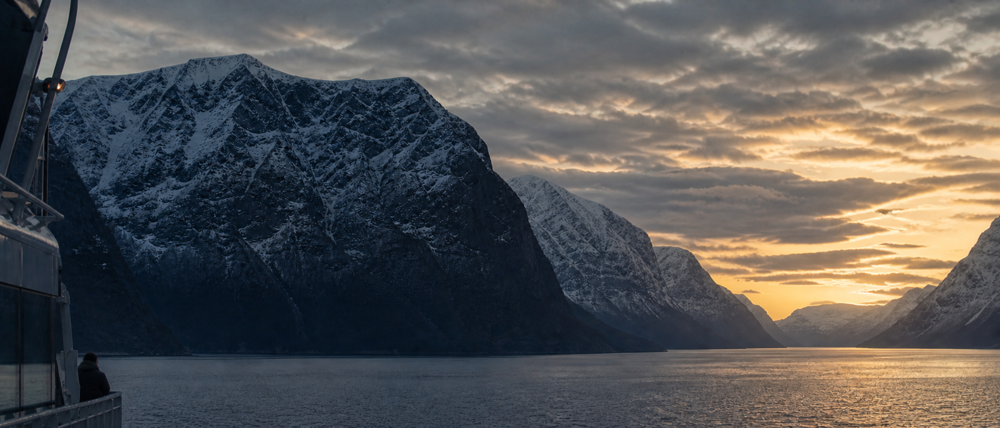
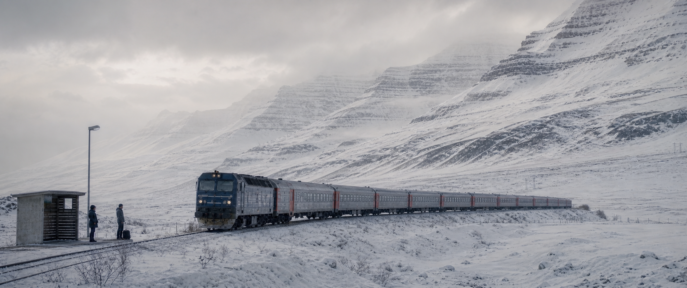
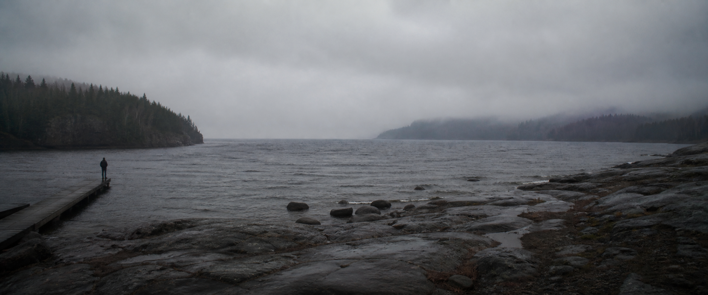
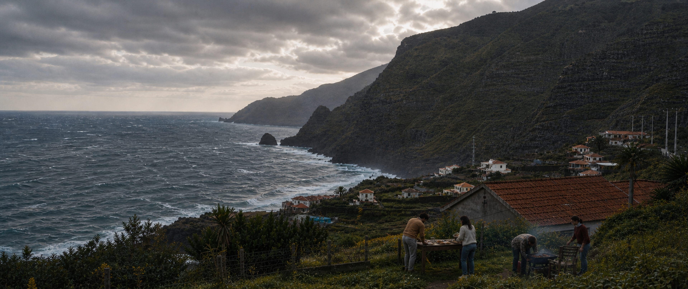
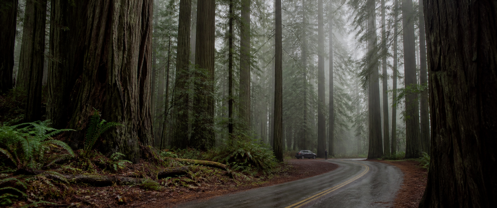
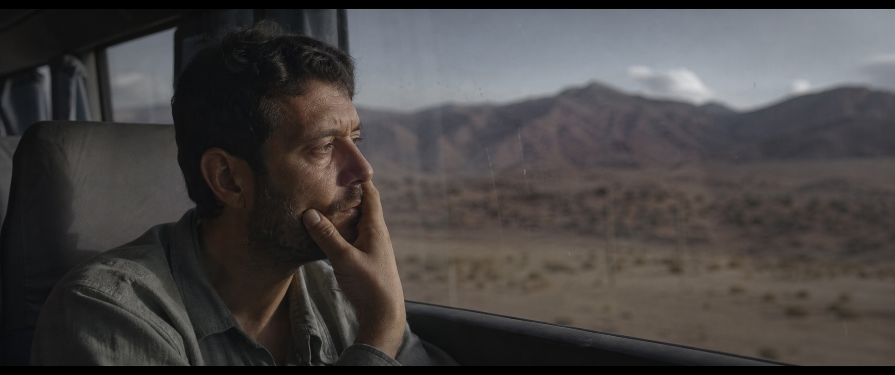

Follow the Light
6 个 3840px 宽参考图绑定的视频生成提示词：5 个宏大环境镜头与 1 个真实人物近景。四位说话者以画外人声接力描绘未来工作方式。全片无 BGM，只保留人声与真实环境音。
Style Contract
现实电影感 + 纪录片观察感 · 16:9 输出，构图保护 2.39:1 · 5 wide landscapes + 1 human close shot · 3840px reference masters · natural color · one camera move per clip.
声音铁律：NO BGM。人物说话必须像真实对话或语音留言，不使用广告腔。禁止视频会议、数字游民摆拍、悬崖边电脑、科幻 UI、AI 塑料脸与旅游宣传片式过饱和。
Locked Voice Script
01 · Maya: “We used to build companies around a place. Same room. Same hours.”
02 · Jonah: “Then work moved online. But somehow, we were still spending our days proving we were online.”
03 · Leila: “In the company ahead, you don’t stay inside the work all day. You set the direction, and agents carry it forward.”
04 · Daniel: “They keep the context, coordinate the work, and bring you in when judgment is actually needed.”
05 · Maya: “Sometimes, work is a two-minute voice note from the road. Then life keeps moving—and so does the company.”
06 · Jonah: “People lead. Agents keep the work moving. Company OS keeps it all connected.”
六段全部为画外人声；画面人物不需要口型同步。所有人声自然、不完美、无广告播音腔。NO BGM THROUGHOUT.
Fjord Ferry at Dawn

## 参考图使用 Image1: first-frame and environment reference only. Lock the monumental fjord geography, the small ferry at frame-left, the dawn direction, the person as a tiny incidental silhouette, and the initial 2.39:1 composition. Do not enlarge the person, change the vessel into a yacht, or transfer accidental facial details. ## 风格提示词 Ultra-photorealistic large-format documentary cinema, restrained premium technology brand film, natural 35mm grain, physically believable water, cloud, snow and wind. Present-day realism, no science fiction. The landscape is the subject; technology remains incidental. ## 首帧直方图 / 色板约束 Approximately 45% deep blue-charcoal shadows, 35% cool midtones, 20% soft amber highlights. Preserve detail in the mountain blacks and roll off the sunrise gently; no crushed silhouettes, no HDR halos, no oversaturated orange. These tonal constraints control the environment only and must not distort the small human figure. ## 人物状态 One adult traveler remains tiny on the exterior side deck at lower-left, body turned three-quarters toward the fjord, practical dark coat, relaxed shoulders, both hands resting naturally near the rail. The traveler never looks at camera and never becomes the visual center. ## 动作提示词 00:00-00:02: Begin exactly from Image1. The ferry advances slowly into the fjord; a narrow wake spreads with real water resistance. The traveler steadies against a light crosswind. 00:02-00:05: A light crosswind moves the coat hem and loose hair after the gust, not before it. The traveler subtly shifts weight with the vessel. 00:05-00:07: The traveler keeps watching the horizon while the ferry continues forward. 00:07-00:08: Hold the small figure and ferry in a stable cuttable composition for one second. Explicitly forbid: waving, posing, turning toward camera, walking away, climbing the railing, dramatic gestures. ## 表演 / 微表情 The face is too small to perform for camera. Use only believable body rhythm: one quiet breath, slight chin lift toward the light, shoulders settling with the vessel. No visible smile or heroic pose. ## 脸部稳定 / 身份保护 Keep the head and body anatomically stable at small scale. No duplicate figure, warped limbs, melted face, enlarged head, or floating phone. Do not invent close-up facial detail. ## 运镜镜头提示词 Extreme wide establishing shot, high but physically plausible camera position from the ferry structure, rectilinear ultra-wide geography with straight horizon and no fisheye. One main movement only: extremely slow forward drift, almost static. No orbit, drone dive, zoom, fast pan, shake, or internal cut. ## 光影材质提示词 Motivated dawn source from frame-right. Amber light touches the water path and cloud edges first; mountains remain cool and dimensional. Snow stays matte, ferry metal slightly wet, water heavy and cold, coat fabric wind-responsive. ## Locked Voice Script Speaker: MAYA · voice-over only · natural English-speaking woman in her late 30s · thoughtful, intimate and unpolished · no announcer delivery. Verbatim: “We used to build companies around a place. Same room. Same hours.” Do not paraphrase, shorten or add words. Do not generate visible lip synchronization. No BGM. ## 音效提示词 MAYA voice-over, natural English-speaking woman in her late 30s, intimate but not whispered, thoughtful and unpolished, never an announcer. No visible person speaks. Verbatim: “We used to build companies around a place. Same room. Same hours.” Ambience: low ferry engine vibration, cold wind, water against the hull, one distant seabird. Keep ambience alive beneath the narration. Absolutely no BGM, no UI beep, no cinematic boom. ## 转场锚点 The low ferry-engine rumble continues across the cut and becomes the low rolling sound of the snow train in Shot 02. ## 负面提示词 No readable text, subtitles, watermark, logo, hologram, interface overlay, luxury yacht, tourist pose, influencer styling, fantasy mountains, aurora, cyberpunk color, time lapse, fast cloud motion, duplicate people, extra limbs, plastic skin, aggressive camera motion, auto BGM.
Snowfield Train

## 参考图使用 Image1: first-frame and environment reference. Lock the real passenger train, rural platform shelter, layered snow mountains, two tiny waiting travelers, screen direction and winter scale. Do not copy random face details or turn the platform into a modern city station. ## 风格提示词 Ultra-photorealistic Arctic location photography, large-format cinematic film still, quiet documentary realism, real snow texture and practical travel clothing. Expansive but not heroic or futuristic. ## 首帧直方图 / 色板约束 55% textured snow highlights, 35% pale blue-gray midtones, 10% soft charcoal shadows. Keep visible ridge and track detail in the white field. White point stays below clipping; no gray muddy snow and no blue monochrome cast. Human faces remain readable if visible. ## 人物状态 Two ordinary travelers wait beside the small shelter at frame-left. One holds practical luggage while both watch the arriving train. They are tiny scale references inside the snowfield, dressed for weather rather than fashion. ## 动作提示词 00:00-00:02: Begin from Image1. The train approaches slowly from frame-right along the fixed track; fine snow is pushed outward close to the wheels. 00:02-00:05: A wind gust crosses left-to-right. One traveler tightens a hand around the bag strap; the other shifts weight heel-to-toe while watching the front carriage. 00:05-00:08: The train decelerates naturally; wheel rotation slows and suspension settles. 00:08-00:09: Hold with the train nearly aligned to the platform and both travelers still standing. Explicitly forbid: boarding, running, waving, falling, posing, walking onto the track. ## 表演 / 微表情 Restrained anticipation only: eyes follow the engine before the head turns, one blink against wind, jaw relaxed. No broad smile, fear, or dramatic reaction. ## 脸部稳定 / 身份保护 Keep both identities separate and anatomically correct. No fused bodies, duplicate luggage, extra arms, stretched faces, or floating feet. Do not enlarge them relative to the environment. ## 运镜镜头提示词 Extreme wide rectilinear geography, camera fixed 20–25 meters from the travelers, distant observational lens compression, one main movement only: barely perceptible slow push-in. No orbit, drone flight, zoom pulse, pan, shake, or cut. ## 光影材质提示词 Diffuse overcast source from upper-left. Snow dust follows train movement and wind direction. Metal carriages remain cold and matte with soft reflections; clothing has realistic weight and delayed wind response. ## Locked Voice Script Speaker: JONAH · voice-over only · natural English-speaking man in his 30s · conversational and lightly self-aware · no corporate delivery. Verbatim: “Then work moved online. But somehow, we were still spending our days proving we were online.” Do not paraphrase, shorten or add words. Do not generate visible lip synchronization. No BGM. ## 音效提示词 JONAH voice-over, natural English-speaking man in his 30s, conversational, lightly self-aware, no corporate polish. No visible person speaks. Verbatim: “Then work moved online. But somehow, we were still spending our days proving we were online.” Ambience: low diesel-electric train roll, wheel rhythm, soft winter wind, fabric movement, distant brake hiss. Keep the train present but never mask the words. Absolutely no BGM, no horn blast, no station announcement, no exaggerated impact. ## 转场锚点 The final wheel-and-track rhythm dissolves into the repeating pattern of small lake waves against the dock in Shot 03. ## 负面提示词 No readable signage, text, logo, watermark, modern city platform, fantasy locomotive, flying snow explosion, blizzard disaster, tourist crowd, video call, laptop, extra people, warped tracks, sliding train, wheel deformation, plastic faces, oversaturated blue, camera orbit, auto BGM.
Lake Superior After Rain

## 参考图使用 Image1: first-frame and environment reference. Lock the immense dark freshwater lake, two mist-softened forest headlands, wet granite shelves, scattered rounded stones, weathered dock entering from lower-left, one tiny adult at its end and the quiet overcast sky. Do not add mountains, boats, cabins, extra people or visible technology. ## 风格提示词 Ultra-photorealistic northern lakeshore documentary cinema, restrained large-format landscape photography, subtle 35mm grain, authentic wet geology and natural atmospheric depth. Quiet and observational, never sentimental or styled as a tourism advertisement. ## 首帧直方图 / 色板约束 35% wet granite and forest shadows, 45% steel-blue and charcoal water midtones, 20% soft grey fog and sky highlights. Preserve texture inside the headlands and cloud ceiling. No clipped mist, blue monochrome, glowing horizon, mirrored surface or HDR halos. Do not brighten the tiny person. ## 人物状态 One fully clothed adult stands at the far end of the dock, less than 1.5 percent of frame height, hands resting inside coat pockets and body facing the lake. The person is only a quiet scale reference, never looking at camera and never using a phone. ## 动作提示词 00:00-00:03: Begin exactly from Image1. Small wind-driven waves travel toward the granite shore and break irregularly; mist crosses the right headland slowly. 00:03-00:07: The person shifts weight once against the wind, coat fabric responding a fraction later. A wave reaches the dock supports and darkens one section of wood. 00:07-00:10: The head lowers slightly toward the water, then remains still while the lake continues moving. End on a stable cuttable composition. Explicitly forbid: walking, waving, turning to camera, raising a phone, sitting, entering water, boats, birds crossing foreground or dramatic fog change. ## 表演 / 微表情 No visible facial performance because the person is extremely small. Use only ordinary weight shift, a slight chin drop and realistic coat inertia. No heroic silhouette, loneliness pose or dramatic gesture. ## 脸部稳定 / 身份保护 Keep the tiny body anatomically stable and consistently scaled. Do not invent facial detail. No duplicate person, enlarged head, extra limbs, sliding feet or changing clothing. ## 运镜镜头提示词 Extreme wide 2.39:1 frame from a real tripod on the granite shore at human height, rectilinear 40mm spherical perspective. One movement only: extremely slow push of less than three percent toward the opening between headlands. No orbit, crane, drone, zoom pulse, pan, tilt, shake or internal cut. ## 光影材质提示词 Diffuse overcast light with no visible sun source. Granite remains dark, wet and irregular; dock boards show age and water absorption; lake water is heavy and slate-grey; mist naturally occludes trees instead of glowing. ## Locked Voice Script Speaker: LEILA · voice-over only · natural English-speaking woman in her early 30s · calm, clear and reflective · speaking to colleagues, not an audience. Verbatim: “In the company ahead, you don’t stay inside the work all day. You set the direction, and agents carry it forward.” Do not paraphrase, shorten or add words. Do not generate visible lip synchronization. No BGM. ## 音效提示词 LEILA voice-over, natural English-speaking woman in her early 30s, calm, clear and reflective, as if speaking to colleagues rather than an audience. No visible person speaks. Verbatim: “In the company ahead, you don’t stay inside the work all day. You set the direction, and agents carry it forward.” Ambience: cold lake waves against granite and dock supports, damp wind through spruce, one distant gull and occasional water dripping from wood. Let the physical sounds breathe between phrases. Absolutely no BGM, no notification and no dramatic swell. ## 转场锚点 The last wave against granite cuts directly to the first rough Atlantic wave in Shot 04. ## 负面提示词 No readable text, logo, watermark, phone, boat, canoe, cabin, luxury resort, tourist pose, fantasy mountains, sunrise, god rays, mirrored lake, neon water, extra people, duplicated figure, foreground face, rapid camera or auto BGM.
Atlantic Cliffs at Dinner

## 参考图使用 Image1: first-frame and environment reference. Lock the monumental Atlantic cliffs, rough sea, coastal village scale, garden table at lower-right, four small friends and broken-cloud light direction. Keep people incidental and do not restore the stronger orange cast or convert the setting into a luxury villa or tourist overlook. ## 风格提示词 Ultra-photorealistic global brand-film location photography, candid friendship, natural 35mm color and imperfect domestic objects. Large-scale landscape with ordinary humor, grounded present day. ## 首帧直方图 / 色板约束 30% textured cliff shadows, 50% cool-neutral land and sea midtones, 20% restrained warm cloud highlights. Preserve highlight roll-off around the broken cloud; no orange wash, crushed people or HDR edge halos. Human skin remains natural and non-waxy. ## 人物状态 Four friends in their 30s–40s prepare a casual garden dinner. One brings a bowl, one arranges mismatched plates, one crouches at a small charcoal grill, and one pulls a chair into place. Everyone is occupied with a different practical task; nobody uses a phone or addresses camera. ## 动作提示词 00:00-00:02: Begin exactly from Image1. Wind moves plants and loose clothing left-to-right; ocean waves advance far below. All four friends continue separate small preparations. 00:02-00:05: The bowl-carrier places the bowl with natural weight while the grill person tries the lighter once; it fails. The chair scrapes a short distance over uneven ground. 00:05-00:08: The plate arranger corrects one crooked plate. The grill person shields the lighter from wind and tries once more; a small flame catches without a flare. 00:08-00:09: Hold the group continuing their tasks, never assembling into a pose. Explicitly forbid: phone use, group toast, cheering, posing, dancing, hugging, turning toward camera, entering or leaving frame. ## 表演 / 微表情 Underplayed familiarity: one brief glance between two friends after the failed lighter, a quiet amused exhale, then attention returns to the task. Hands remain busy and gestures stay small. ## 脸部稳定 / 身份保护 Keep all four identities separate, correct scale and anatomy. No face fusion, duplicated person, extra arms, changing clothes, oversized heads or waxy skin. Do not sharpen tiny faces unnaturally. ## 运镜镜头提示词 Extreme wide 2.39:1 master shot, camera 20–25 meters from the group with cliffs and sea dominant. One main movement only: extremely slow lateral reveal to the right, less than one meter equivalent. No orbit, drone rise, push-pull zoom, fast pan, shake, or cut. ## 光影材质提示词 Motivated sunset source from upper-left behind cloud. Warm rim on shoulders and table edges; cliff faces retain deep structure. Smoke from barbecue follows wind and stays thin. Wood, ceramic, cloth and vegetation remain tactile and imperfect. ## Locked Voice Script Speaker: DANIEL · voice-over only · natural English-speaking man in his early 40s · grounded, concise and matter-of-fact · no announcer weight. Verbatim: “They keep the context, coordinate the work, and bring you in when judgment is actually needed.” Do not paraphrase, shorten or add words. Do not generate visible lip synchronization. No BGM. ## 音效提示词 DANIEL voice-over, natural English-speaking man in his early 40s, grounded and concise, no announcer weight. No visible person speaks. Verbatim: “They keep the context, coordinate the work, and bring you in when judgment is actually needed.” Ambience: Atlantic wind, distant surf, plates on wood, one lighter click, low natural table conversation too indistinct to understand. The narration remains clear. Absolutely no BGM, no notification beep, no triumphant sound. ## 转场锚点 The second lighter click and small natural flame cut to the warm wall lamp inside the ferry cabin in Shot 05. ## 负面提示词 No readable text, logo, watermark, corporate party, luxury villa, influencer dinner, staged smiles, phone, video call, laptop, fantasy cliffs, oversized sunset, orange color wash, face fusion, extra limbs, fast camera, auto BGM.
Redwood Road in Fog

## 参考图使用 Image1: first-frame and environment reference. Lock the enormous coastal redwood trunks, layered fog, wet two-lane road, gravel pullout, small ordinary hatchback and nearly invisible adult beside it. Preserve the exact 2.39:1 scale relationship. Do not move the person toward camera, enlarge the car or turn the forest into a fantasy location. ## 风格提示词 Ultra-photorealistic large-format forest documentary cinema, restrained premium brand-film craft, dense believable natural detail, subtle 35mm grain and present-day realism. The ancient forest is the subject; future-of-work meaning comes only from the voice-over. ## 首帧直方图 / 色板约束 45% deep bark and forest-floor shadows, 40% subdued green-brown midtones, 15% soft grey fog highlights. Preserve detail inside the darkest trunk fissures and roll fog brightness gently. No crushed blacks, emerald color wash, glowing mist or HDR halos. Do not brighten the tiny person. ## 人物状态 One fully clothed adult stands beside the distant hatchback at the gravel pullout, less than 1.5 percent of frame height. The person faces partly into the forest and holds a phone near the chest for one short voice note, but the device and face remain too small to inspect. No pose and no interaction with camera. ## 动作提示词 00:00-00:02: Begin exactly from Image1. Fine fog moves slowly between distant trunks; one wet fern frond settles after a drop. The car remains parked. 00:02-00:07: The tiny person records a brief voice note without walking. Only a small shift of weight and one slight arm movement are visible; no lip detail is generated. 00:07-00:09: The arm lowers and the person turns a few degrees toward the trees. Fog continues its slow lateral drift. 00:09-00:10: Hold the vast quiet forest and road in a stable cuttable composition. Explicitly forbid: approaching camera, opening the car, driving, waving, walking into road, showing phone, looking at camera, added people, wildlife spectacle or dramatic fog surge. ## 表演 / 微表情 The face is too small for visible performance. Use only ordinary body weight, a slight shoulder rise during speech and natural arm inertia when the phone lowers. No heroic stance, smile, fear or wonder pose. ## 脸部稳定 / 身份保护 Keep the tiny figure anatomically stable and consistently scaled. Do not invent facial detail. No duplicate person, enlarged head, extra limbs, fused phone, floating feet or scale drift. ## 运镜镜头提示词 Extreme wide 2.39:1 frame from a real roadside tripod at shoulder height, rectilinear 40mm spherical perspective. One main movement only: extremely slow lateral slide of less than 30 centimeters, preserving vertical tree lines. No drone, orbit, tilt, zoom pulse, handheld shake, speed ramp or internal cut. ## 光影材质提示词 Soft grey skylight filters through the canopy with no direct beams. Redwood bark is deeply fissured and matte; wet asphalt has restrained reflections; ferns and fallen wood carry small water droplets; fog creates real occlusion rather than glow. ## Locked Voice Script Speaker: MAYA · voice-over only · natural English-speaking woman in her late 30s · close, unhurried and warm without sentimentality · no announcer delivery. Verbatim: “Sometimes, work is a two-minute voice note from the road. Then life keeps moving—and so does the company.” Do not paraphrase, shorten or add words. Do not generate visible lip synchronization. No BGM. ## 音效提示词 MAYA voice-over, natural English-speaking woman in her late 30s, close and unhurried, warm but not sentimental, no announcer polish. No visible lip synchronization is required. Verbatim: “Sometimes, work is a two-minute voice note from the road. Then life keeps moving—and so does the company.” Ambience: soft wind high in the canopy, occasional water drops, distant tires passing far outside frame and subdued forest room tone. Let the forest remain audible beneath the words. Absolutely no BGM, no send chime, no AI voice. ## 转场锚点 The low canopy wind is joined by a distant tire hiss, which carries across the cut into the minibus interior of Shot 06. ## 负面提示词 No subtitles, readable text, logo, watermark, fantasy forest, glowing fog, sun shafts, emerald wash, camping setup, luxury car, influencer pose, foreground person, visible phone screen, extra people, oversized wildlife, duplicate trunks, warped road, scale drift, camera orbit, auto BGM.
Between Places

## 参考图使用 Image1: first-frame and identity-state reference. Lock the man’s early-40s age, ordinary asymmetrical face, short uneven dark hair, sparse beard, under-eye fatigue, faded overshirt, hand resting naturally against cheek, dusty minibus window and soft high-desert landscape beyond. Preserve the 2.39:1 negative space to frame-right. Do not beautify or replace the face. ## 风格提示词 Ultra-photorealistic observational human cinema, restrained documentary portraiture, honest skin texture, ordinary transport, subtle 35mm grain and physically plausible road movement. Intimate without sentimentality, present-day and completely free of science-fiction styling. ## 首帧直方图 / 色板约束 35% cabin and hair shadows, 45% natural skin, fabric and desert midtones, 20% soft grey window highlights. Preserve detail in the shadow-side eye and beard without beauty fill. No clipped window, orange skin, teal shadows, HDR halos or over-sharpened iris. ## 人物状态 One ordinary man in his early 40s sits beside the minibus window, shoulders naturally rounded after a long journey. Two curled fingers support his cheek with real pressure; eyes remain on the passing landscape. He is not speaking, holding a device or aware of camera. ## 动作提示词 00:00-00:02: Begin exactly from Image1. The moving road creates fine vibration in the seat and window reflection; the blurred desert drifts right-to-left outside. 00:02-00:05: He blinks once, eyes refocus farther away, and his fingertips shift a few millimeters with natural skin compression. Head position remains almost unchanged. 00:05-00:07: A soft patch of exterior light passes across the window and cheek; his jaw releases after a quiet breath. 00:07-00:08: Hold his settled gaze and the moving landscape for a clean endpoint. Explicitly forbid: speaking, smiling, crying, looking at camera, using a phone, removing the hand, turning the head, standing, sleeping or making a large gesture. ## 表演 / 微表情 Internal, nearly motionless attention: one delayed blink, tiny eye refocus, slight jaw release and quiet nasal breath. The hand remains heavy against the face. No inspirational expression, dramatic sadness or commercial-model intensity. ## 脸部稳定 / 身份保护 Preserve exact face shape, age, asymmetry, ear, brow, nose, beard pattern, skin pores and eye spacing from Image1. Preserve the anatomically correct five-finger hand and cheek pressure. No face replacement, beautification, age drift, wax skin, uneven eyes, changing beard, extra finger or fused knuckle. ## 运镜镜头提示词 Medium close side profile at seated shoulder height, 65mm spherical lens, natural shallow depth of field with window and desert still readable. One movement only: extremely slow push-in of less than four percent. No orbit, pan, rack-focus gimmick, zoom pulse, handheld shake, speed ramp or internal cut. ## 光影材质提示词 Natural grey daylight through the dusty window is the only key. Skin remains matte with pores and subtle fatigue; beard hairs stay irregular; faded cotton shows wear; glass carries faint dust, scratches and a restrained reflection. No rim light or beauty fill. ## Locked Voice Script Speaker: JONAH · voice-over only · the same voice heard in Shot 02 · quieter and certain without sounding triumphant. Verbatim: “People lead. Agents keep the work moving. Company OS keeps it all connected.” Do not paraphrase, shorten or add words. Do not generate visible lip synchronization. No BGM. ## 音效提示词 JONAH voice-over, the same natural English-speaking man heard in Shot 02, now quieter and certain without sounding triumphant. No visible person speaks. Verbatim: “People lead. Agents keep the work moving. Company OS keeps it all connected.” Ambience: low minibus engine and tire hum, subtle suspension vibration, one soft cabin rattle and muted wind beyond the glass. Leave one full second of vehicle room tone after the final words. Absolutely no BGM, no sonic logo, no UI chime and no artificial AI voice. ## 转场锚点 Hold the face and passing desert for one second after “connected.” The tire hum continues under a simple Company OS end card or real product capture; do not introduce music at the logo. ## 负面提示词 No subtitles, readable generated text, logo, watermark, speaking lips, phone, laptop, hologram, luxury bus, beauty lighting, fashion portrait, perfect symmetry, smile, tears, heroic look, wax skin, over-sharpened eyes, face drift, beard drift, extra fingers, fused hand, window distortion, camera orbit or auto BGM.
片尾与真实产品画面
建议在 Shot 06 最后一句之后继续保留 1 秒车内轮胎低频，再出现极简 Company OS 片尾。若加入任务、证据、权限和审批画面，只使用真实产品录屏，不让视频模型生成可读 UI；产品段同样不加 BGM。